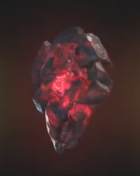

| Time |
Green |
As the Infinity Stone that represents, describes and governs over the flow of time, the Time Stone is among the most powerful artifacts in all existence. Due to its power, it cannot be held and used by anyone not powerful enough to withstand it, thus forcing Agamotto to create the Eye of Agamotto as a container to allow other sufficiently advanced sorcerers to wield it. |
 |
| Space |
Blue |
As the Infinity Stone that represents and governs over space, the Space Stone grants the wielder absolute control over space itself. It is primarily used to open portals to other locations and can even allow interdimensional travel. |
 |
| Mind |
Yellow |
As the Infinity Stone that represents and governs the fabric of mind, the Mind Stone grants whoever holds it complete control over the hearts and minds of others. Like with all the other Infinity Stones, it is among the most powerful artifacts in all existence. |
 |
| Reality |
Red |
As the Infinity Stone that represented and governs over reality, the Reality Stone granted its user absolute control over reality itself. However, like all other Infinity Stones, due to it being the most powerful artifact in existence, it can only be wielded by beings of sufficient power and inside beings of no powers, it will inevitably kill them, as evidenced with Jane Foster. |
 |
| Power |
Purple |
As the Infinity Stone that embodies both the sustaining and destructive forces of the universe, the Power Stone grants its wielder tremendous energy manipulation capabilities. Due to the amount of energy the Power Stone releases, it is the most destructive out of all the Infinity Stones in terms of raw power. |
 |